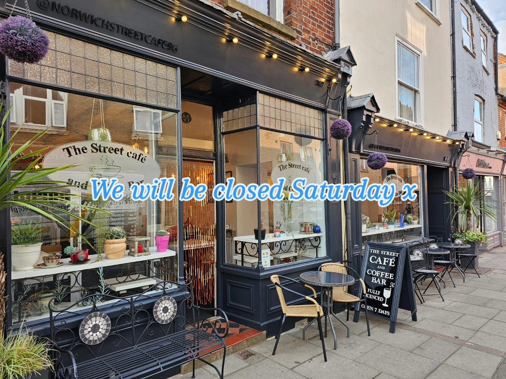
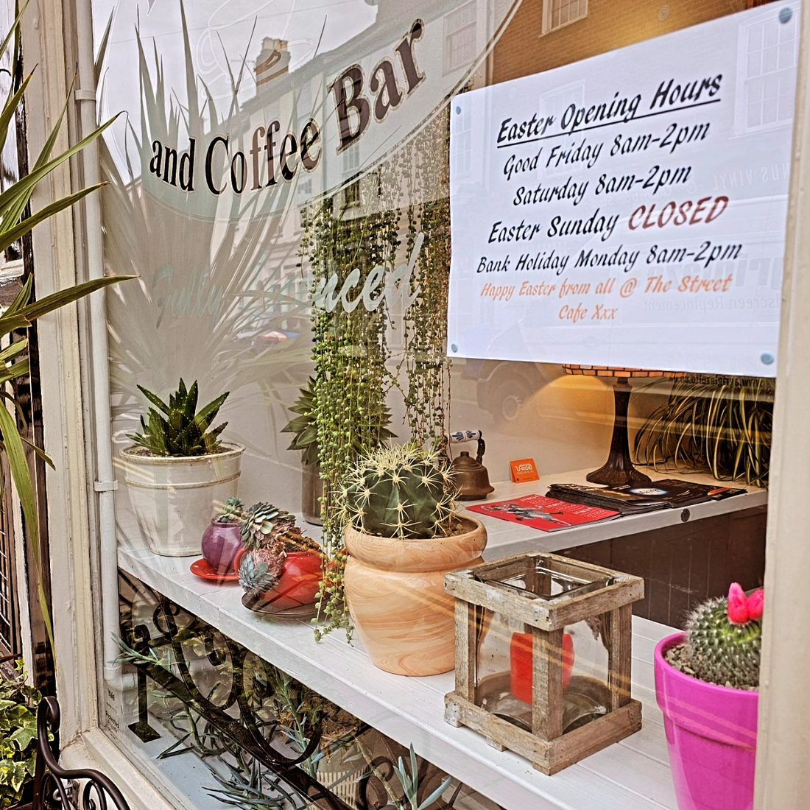

Find & contact us
A few minutes' walk from Norwich Market and the city centre, on the historic Magdalen Street.
Opening hours
| Monday | 08:00 – 14:00 |
|---|---|
| Tuesday | 08:00 – 14:00 |
| Wednesday | 08:00 – 14:00 |
| Thursday | 08:00 – 14:00 |
| Friday | 08:00 – 14:00 |
| Saturday | 08:00 – 14:00 |
| Sunday | 08:00 – 13:30 |

